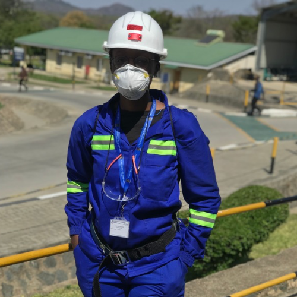
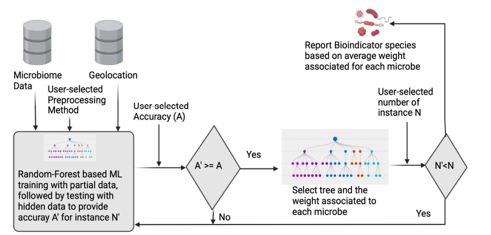
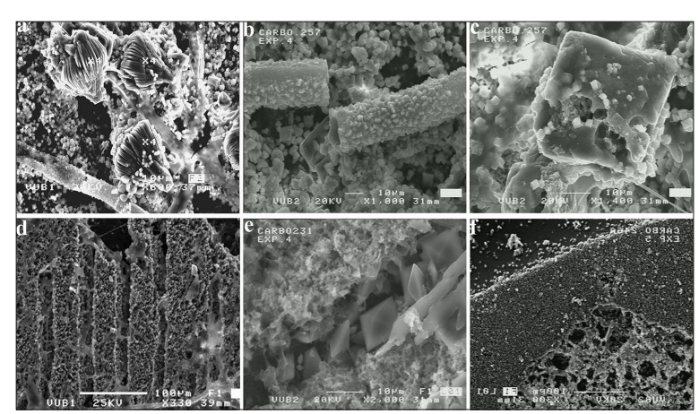
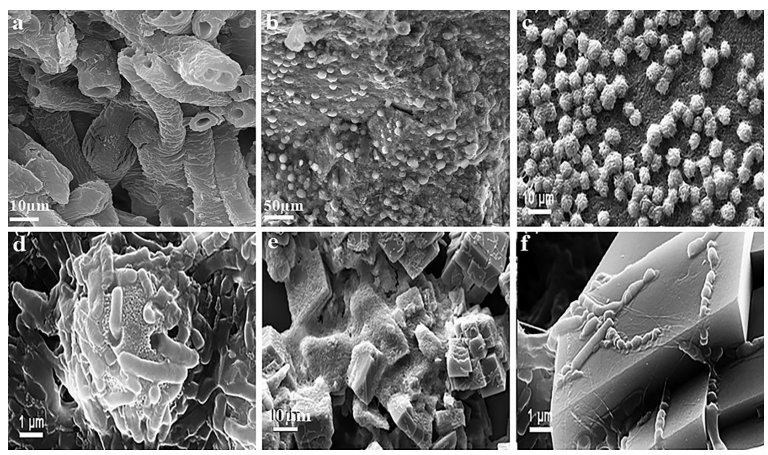
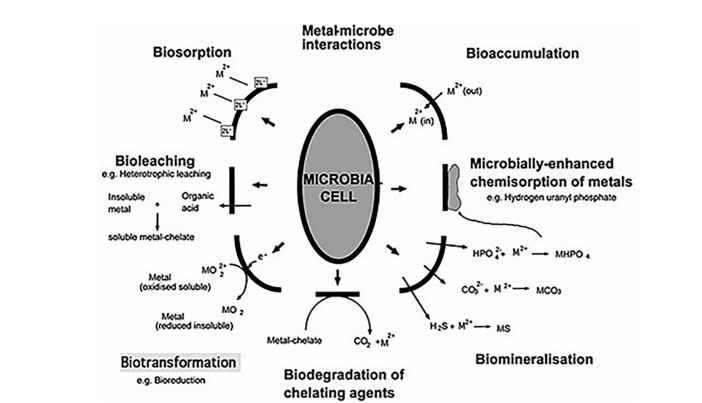

Academic Profile For Shinga C.MadzimaShinga C. Madzima
👩🏿🔬 Shinga C. Madzima 👩🏿🔬
About Me

BSc (Hons) Mining Engineering
University of Zimbabwe
I am a dedicated mining engineer with a BSc (Hons) in Mining Engineering from the University of Zimbabwe. My portfolio serves as a quasi-library where I curate and store various papers related to my interests in mining engineering, geospatial techniques, and advanced machine learning.
Through this platform, I aim to share insights and research that highlight the intersection of human activities and microbial communities, as well as the integration of remote sensing with microbial data.
NSSA Occupational Health and Safety Conference (Victoria Falls, Matebeleland, Zimbabwe 2024)
Addressed over 300 stakeholders on geospatial techniques in mining in the Southern African Region.
SAIMM Annual Students Colloquium (Johannesburg, Gauteng, South Africa 2024)
Briefed delegations on the use of Remote Sensing to assess soil moisture at platinum mines.
International Symposium on Earth Science and Technology (CINEST) (Fukuoka, Japan 2024)
Presented research on green mining techniques to an international symposium.
Awards
SAIMM Annual Students Colloquium (2024)
Awarded Best in Mining First Runner Up.
ZICT Excellence Awards (2024)
Nominated for outstanding contributions in technology and innovation.
My Research Interest Repository
👩🏿🔬My Research Interest Repository👩🏿🔬
💻Machine Learning💻
A Conceptual Framework for Greener Goldmining through Environmental Management Accounting Practices (EMAPs): The Case of Zimbabwe
Published in 2021
By Moses Nyakuwanika et al.
Summary
This paper presents a conceptual framework aimed at promoting greener gold mining practices in Zimbabwe through the integration of Environmental Management Accounting Practices (EMAPs). The study identifies key environmental issues associated with gold mining, such as pollution, resource depletion, and social impacts on local communities. It emphasizes the need for integrating practices like Material Flow Cost Accounting (MFCA), Life Cycle Costing (LCC), and Activity-Based Costing (ABC) to enhance sustainability in the sector.
Limitations
Several limitations were noted in the study:
Data Constraints: Limited access to comprehensive data on environmental impacts and accounting practices in the gold mining sector may hinder the robustness of the findings.
Focus on a Single Sector: The study primarily focuses on gold mining, which may not fully capture the broader implications for other mining sectors in Zimbabwe.
Regulatory Challenges: The effectiveness of the proposed framework may be impacted by existing regulatory frameworks and enforcement mechanisms that are not conducive to sustainable practices.
Research Gaps
The study highlights several research gaps that require further exploration:
Comparative Studies: There is a need for comparative studies across different mining sectors to understand how EMAPs can be adapted and implemented effectively.
Longitudinal Studies: Future research should include longitudinal studies to assess the long-term impacts of EMAPs on environmental and economic performance.
Stakeholder Engagement: More research is needed on how to effectively engage stakeholders in the implementation of EMAPs within the gold mining sector.
Future Opportunities
The findings suggest several future opportunities for advancing greener gold mining practices:
Policy Development: There is an opportunity for policymakers to develop regulations that incentivize the adoption of EMAPs in the mining sector.
Capacity Building: Training programs aimed at enhancing knowledge and skills related to EMAPs among mining companies could facilitate better implementation.
Technological Innovation: Encouraging investment in green technologies can support the transition towards more sustainable mining practices.
Environmental Management and Practices in Zimbabwe’s Chivi District: A Political Ecology Analysis
Published in 2021
By M. Macheka
Summary
This paper examines the relationship between society, politics, and the environment in Chivi District, Southern Zimbabwe, through a political ecology lens. It addresses the ongoing environmental degradation in the region and critiques the effectiveness of existing environmental policies and regulations. The study employs qualitative methods, including interviews with key informants, to explore how political interventions impact natural resource management and community livelihoods.
Limitations
The study has several limitations:
Data Limitations: The reliance on qualitative data from a limited number of interviews may not fully represent the diverse perspectives within the community.
Scope of Study: Focusing solely on Chivi District may limit the generalizability of findings to other regions in Zimbabwe facing similar environmental challenges.
Policy Context: The analysis may not adequately account for the broader political context influencing environmental management practices beyond Chivi District.
Research Gaps
The paper identifies several gaps that warrant further investigation:
Comparative Analyses: There is a need for comparative studies across different districts to understand varying impacts of political ecology on environmental management.
Longitudinal Studies: Future research could benefit from longitudinal studies to assess changes over time in resource management practices and their outcomes.
Community Engagement: More research is needed on effective strategies for engaging communities in sustainable resource management practices.
Future Opportunities
The findings suggest several opportunities for improving environmental management in Chivi District:
Policy Reform: Advocating for policy reforms that address the root causes of environmental degradation and promote sustainable practices is essential.
Capacity Building: Implementing training programs for local communities on sustainable resource management can enhance their ability to manage natural resources effectively.
Collaboration with NGOs: Strengthening partnerships between local communities and non-governmental organizations can facilitate better resource management initiatives.
Sustainable E-waste Management at Higher Education Institutions’ Data Centres in Zimbabwe
Published in 2022
By V. Maphosa
Table 4: Measures Put in Place for Proper Disposal of Data Centre E-waste
Measure
Mean
Standard Deviation
We have operational procedures
1.0
0.45
We have a collection program
1.1
0.35
We have labelled collection points and bins to ensure the environmental footprint
1.4
0.26
Implemented server virtualisation for environmental sustainability
3.7
0.33
Some of the data is stored in the cloud to reduce the carbon footprint
3.5
0.43
We use the intranet and social media to sensitise and educate staff
1.3
0.30
I return to the seller/manufacturer (Extended Producer Responsibility)
0.5
0.36
Summary
This study examines the management of electronic waste (e-waste) generated by data centres in Zimbabwean higher education institutions (HEIs). It highlights the environmental sustainability challenges posed by improper disposal of e-waste and the need for effective management practices. The research utilizes a quantitative questionnaire distributed to ICT Directors and Managers across various universities, revealing that many institutions lack operational procedures for e-waste management. The findings emphasize the importance of raising awareness and implementing responsible practices to mitigate the environmental and health impacts associated with e-waste.
Limitations
The study has several limitations:
Sample Size: The research may not fully represent all higher education institutions in Zimbabwe due to a limited sample size.
Data Collection Method: Reliance on self-reported data from questionnaires may introduce bias or inaccuracies in the findings.
Lack of Longitudinal Data: The study does not include longitudinal data to assess changes in e-waste management practices over time.
Research Gaps
The paper identifies several gaps that require further exploration:
Comparative Studies: More comparative studies are needed to evaluate e-waste management practices across different sectors beyond higher education.
Policy Analysis: Further research should analyze the effectiveness of existing national policies on e-waste management in Zimbabwe.
Community Engagement: Investigating community involvement in e-waste recycling initiatives could provide insights into improving local practices.
Future Opportunities
The findings suggest several opportunities for enhancing e-waste management practices:
Policy Development: There is an opportunity for policymakers to create regulations that promote sustainable e-waste management practices in educational institutions.
Awareness Campaigns: Implementing awareness campaigns targeting both staff and students can foster responsible disposal practices.
Collaboration with Industry: Partnerships between universities and recycling firms can facilitate better e-waste processing solutions and technologies.
Progress Towards UNAIDS’s 95-95-95 Targets in Zimbabwe: Sociodemographic Constraints and Geospatial Heterogeneity
Published in 2023
By MD Tuhin Chowdhury et al.
Summary
This study evaluates Zimbabwe's progress towards achieving the UNAIDS 95-95-95 targets, which aim for 95% of people living with HIV to know their status, 95% of those diagnosed to receive antiretroviral therapy (ART), and 95% of those on ART to achieve viral load suppression. Using geospatial data from the Zimbabwe Population-based HIV Impact Assessment (ZIMPHIA), the research identifies patterns and determinants impacting HIV care across different regions. The analysis employs advanced techniques such as Gaussian kernel interpolation and multivariate geospatial k-means clustering to uncover spatial heterogeneity in HIV care outcomes.
Limitations
The study has several limitations:
Data Limitations: The reliance on geospatial data may not capture all local dynamics affecting HIV care, particularly in underserved communities.
Cross-sectional Nature: The cross-sectional design limits the ability to establish causal relationships between sociodemographic factors and HIV care outcomes.
Generalizability: Findings may not be generalizable to populations outside of Zimbabwe or to different contexts within the country.
Research Gaps
The paper identifies several gaps that require further exploration:
Longitudinal Studies: Future research should include longitudinal studies to assess changes over time in HIV care outcomes and their determinants.
Qualitative Insights: Incorporating qualitative methods could provide deeper insights into the barriers faced by specific populations in accessing HIV care.
Policy Analysis: More research is needed on how national policies influence local implementation of HIV care programs.
Future Opportunities
The findings suggest several opportunities for improving HIV care in Zimbabwe:
Targeted Interventions: Designing region-specific interventions based on identified clusters can help address unique challenges faced by different communities.
Community Engagement: Enhancing community involvement in HIV care programs can improve awareness and uptake of services.
Resource Allocation: Optimizing resource allocation based on geospatial analyses can ensure that resources are directed where they are most needed.
GIS Application in Environmental Management: A Review
Published in 2023
By Le Hoang Tu et al.
Abstract
The role of environmental management is extremely important in human life because of its contribution to environmental protection and strategies. In modern society, facing the challenges in land, water, and air quality management is unavoidable. Understanding the variability and features of environmental issues is necessary to support decision-makers in establishing effective environmental management planning. Geographic Information Systems (GIS) is one of the most popular tools to store, analyze, and visualize geographically referenced data, which can mitigate these challenges more effectively and accurately.
Summary
This review paper emphasizes the applications of GIS in environmental management, discussing its effectiveness in supporting land, water, air quality, and waste management. The authors highlight how GIS facilitates monitoring and assessing environmental quality and aids in environmental planning and decision-making. The paper reviews various studies over recent decades to showcase the diverse applications of GIS technology in addressing environmental challenges.
Limitations
The study identifies several limitations regarding GIS applications:
Accuracy Assessment: There is a need for thorough accuracy assessments and sensitivity analyses to ensure reliable data interpretation.
Data Quality: The effectiveness of GIS applications can be compromised by poor-quality or incomplete data.
Technological Barriers: Limited access to advanced GIS technologies may hinder widespread application in some regions.
Research Gaps
The paper identifies several research gaps that require further exploration:
Integration with Emerging Technologies: Future studies should explore integrating GIS with new technologies such as remote sensing and machine learning for enhanced decision-making.
Longitudinal Studies: More longitudinal studies are needed to assess the long-term impacts of GIS applications on environmental management outcomes.
User Training: Research on training programs for users to effectively utilize GIS tools could improve application success rates.
Future Opportunities
The findings suggest several opportunities for advancing GIS applications in environmental management:
Policy Development: Policymakers can leverage GIS data to inform regulations that promote sustainable practices.
Community Engagement: Enhancing community involvement through participatory GIS can lead to better resource management decisions.
Sustainable Development Models: Developing sustainable development models using GIS can address complex environmental issues effectively.
Potential of GIS and Remote Sensing in Mapping Land Degradation: Catchment of the Manyame River, Zimbabwe
Published in 2023
By H. Muhoyi, E. Muhoyi
Abstract
This study focuses on the distribution and magnitude of land degradation in the Manyame River Catchment area using GIS and remote sensing techniques. The research highlights the severe land degradation caused by both legal and illegal land husbandry practices, which negatively impact the sustainability of existing ecosystems. The study employs Normalised Difference Vegetation Index (NDVI) analysis alongside precipitation data from 2000 to 2017 to quantify degradation trends over time.
Summary
The findings indicate that significant human-induced land degradation has occurred in the Manyame River Catchment. The study utilizes the RESTREND method to isolate human impacts from climatic influences on vegetation cover. By mapping areas of degradation, this research provides valuable insights for natural resource practitioners to monitor and manage environmental changes effectively.
Limitations
The study has several limitations:
Data Availability: Limited access to high-resolution data may affect the accuracy of degradation assessments.
Temporal Scope: The analysis is based on data from a specific time frame (2000-2017), which may not capture recent changes in land use practices.
Generalizability: Results may not be applicable to other regions with different ecological or socio-economic contexts.
Research Gaps
The paper identifies several gaps that require further exploration:
Comparative Studies: More studies are needed to compare land degradation trends across different catchments in Zimbabwe.
Longitudinal Research: Future research should include longitudinal studies to assess ongoing changes in land use and their impacts on ecosystems.
Community Engagement: Investigating local community perceptions and involvement in land management could enhance sustainable practices.
Future Opportunities
The findings suggest several opportunities for improving land management practices:
Policy Development: Policymakers can use the findings to develop regulations that promote sustainable land use practices.
Capacity Building: Training programs for local stakeholders on GIS and remote sensing applications can improve monitoring efforts.
Sustainable Practices: Implementing sustainable agricultural practices based on research findings can help mitigate land degradation.
This paper discusses the development of Cassandra, an open-source tool that employs supervised machine learning techniques to identify bioindicator species from microbial data. The study highlights how the Random Forest-based algorithm enhances microbial forensics by selecting species that can effectively discriminate locations based on microbial data and geolocation.
Limitations
The study has several limitations:
Data Quality: The accuracy of the results may be influenced by the quality and completeness of the microbial datasets used.
Algorithmic Constraints: The performance of the Random Forest method may vary depending on the specific characteristics of the datasets.
Generalizability: Findings may not be applicable to all environments or microbial communities outside those studied.
Research Gaps
The paper identifies several gaps that require further exploration:
Broader Applications: More research is needed to apply Cassandra to diverse ecosystems beyond those currently tested.
Integration with Other Techniques: Future studies should explore integrating Cassandra with other machine learning methods to enhance predictive accuracy.
User Training: Investigating the need for user training and resources to effectively utilize Cassandra in various contexts is essential.
Future Opportunities
The findings suggest several opportunities for advancing microbial forensics:
Tool Development: Continued development of Cassandra could improve its functionality and user-friendliness for researchers in microbial ecology.
Collaborative Research: Encouraging collaboration among researchers can enhance data sharing and improve model accuracy across different studies.
Policy Implications: Findings can inform policies related to environmental monitoring and biodiversity conservation efforts.
Working Principle of Cassandra

The Random Forest-based method is designed to select bioindicator species for applications to microbial forensics. (A) Diagrammatic schematic showing a conceptual interpretation of how Cassandra selects top bioindicator species for discriminating location from microbial data and geolocation and (B) Algorithmic Schema that Cassandra uses for reporting species of interest.
Toxic Effects of Different Heavy Metals on Human Health
Heavy Metals
Toxic Form
Health Risks
References
Cadmium
Cd2+
Cd toxicity reduces cell vitality, induces apoptosis, and damages the kidney, liver, and bones.
Wang et al. (2021)
Cadmium
Cd2+
High intake of Cd causes fractured bones, kidney damage, liver infections, and reproductive dysfunctions.
Kim et al. (2019)
Arsenic
As
As toxicity develops dermal lesions (hyperkeratosis and pigment alterations) and can lead to skin cancer.
Muzaffar et al. (2023)
Mercury
Hg
Hg toxicity enhances heart rate, causes headaches, hypertension, insomnia, alters nerve response, impairs cognitive function, and results in cardiac and renal dysfunctions.
Eneh et al. (2023)
Lead
Pb
Pb toxicity is lethal to the heart, kidneys, and nervous system. It also affects brain development and the gastrointestinal tract of children.
Mishra et al. (2022)
Iron
Fe
Iron toxicity causes dehydration that can lead to abdominal pain, vomiting, diarrhea, and lethargy.
Singh et al. (2023)
Copper
Cu
Cu toxicity causes gastrointestinal distress followed by abdominal pain, vomiting, hypotension, and affects brain, liver, and kidney functions.
Leal et al. (2023)
Chromium
Cr3+
Cr3+ toxicity reduces cell vigor and can cause breast and liver cancer.
Chandra et al. (2020)
Aluminium
Al3+
Al toxicity damages the central nervous system, kidneys, and liver functions, causing pulmonary fibrosis, osteomalacia, and lung infections.
Obani et al. (2023)
Toxic Effects of Different Heavy Metals on Plants and Soil Health
Heavy Metals
Concentration of Heavy Metals
Growth Media
Plant Species
Effect on Plants and Soil
References
Chromium
120 mM
Soil
Grapevine
Cr toxicity reduced root and shoot growth, tissue nutrient concentration, chlorophyll contents, leaf water status, quantum yield of photosystem II, and soil microbial activity.
Nikolaou et al. (2022)
Lead
200 mg Kg−1
Soil
Sunflower
Pb intensity reduced soil fertility and water uptake along with a significant decrease in stem and root length, dry biomass, and crop yield.
Alaboudi et al. (2018)
Cadmium
2 mg kg−1
Soil
Rice
Cd stress increased ROS that destroyed chloroplasts, reducing photosynthetic efficiency. Cd toxicity altered nutrient absorption by plant roots.
Li et al. (2023)
Copper
10 g L-1
Soil
Barley
Cu toxicity decreased root and shoot length by affecting stomatal density, conductance, and PS II efficiency while high Cu reduced organic matter percentage and microbial population in soil.
Rajput et al. (2018)
The microgeo: an R package rapidly displays the biogeography of soil microbial community traits on maps
Published in 2024
By Chaonan Li et al.
Summary
This paper introduces microgeo, an R package designed to facilitate the visualization of soil microbial community traits on geographical maps. The package addresses challenges in interpreting microbial biogeography, particularly when dealing with large spatial scales or uneven sampling distributions. By integrating various functions for data manipulation and visualization, microgeo allows users to effectively display microbial traits alongside geographical metadata.
Limitations
The study has several limitations:
Data Quality: The effectiveness of the microgeo package is dependent on the quality and completeness of the input microbial datasets.
Algorithmic Constraints: Performance may vary based on the specific characteristics of the datasets used for analysis.
Generalizability: Findings may not be applicable to all environments or microbial communities outside those studied.
Research Gaps
The paper identifies several gaps that require further exploration:
Broader Applications: More research is needed to apply microgeo to diverse ecosystems beyond those currently tested.
Integration with Other Tools: Future studies should explore integrating microgeo with other data analysis tools to enhance functionality.
User Training: Investigating the need for user training and resources to effectively utilize microgeo in various contexts is essential.
Future Opportunities
The findings suggest several opportunities for advancing microbial biogeography analysis:
Tool Development: Continued development of microgeo could improve its functionality and user-friendliness for researchers in microbial ecology.
Collaborative Research: Encouraging collaboration among researchers can enhance data sharing and improve model accuracy across different studies.
Policy Implications: Findings can inform policies related to environmental monitoring and biodiversity conservation efforts.
Bacterial and Fungal-Mineral Interactions and their Application in Bioremediation – A Review
Published in 2023
By Renjbar Muksy, K. Kolo, S. Gorony
Summary
This review explores the interactions between bacteria and fungi with mineral substrates and their implications for bioremediation. The authors discuss various mechanisms through which microbial communities can enhance mineral weathering, nutrient cycling, and pollutant degradation. The paper emphasizes the potential of harnessing these interactions for developing sustainable bioremediation strategies to address environmental contamination.
Limitations
The study has several limitations:
Data Variability: The variability in microbial interactions across different environments may limit the generalizability of findings.
Research Focus: The review may not cover all relevant studies or emerging technologies in microbial bioremediation.
Methodological Differences: Differences in methodologies among studies may affect the comparability of results.
Research Gaps
The paper identifies several gaps that require further exploration:
Longitudinal Studies: More long-term studies are needed to assess the effectiveness of microbial interactions in various bioremediation contexts.
Comparative Analyses: Comparative studies across different ecosystems can provide insights into the effectiveness of specific bacterial and fungal interactions.
Mechanistic Understanding: Further research is needed to elucidate the underlying mechanisms driving microbial-mineral interactions.
Future Opportunities
The findings suggest several opportunities for advancing bioremediation practices:
Innovative Applications: Developing new bioremediation technologies that leverage bacterial and fungal interactions can enhance pollutant degradation.
Interdisciplinary Collaboration: Encouraging collaboration among microbiologists, ecologists, and environmental engineers can lead to more effective bioremediation strategies.
Sustainable Practices: Integrating microbial approaches into broader environmental management practices can promote sustainability.
Figures

Figure 1. Scanning electron microscope (SEM) images showing fungal interaction with carbonate substrates, formation of biominerals through metal complexation with Ca and Mg of substrates and the alteration of substrates through bioweathering. a. Formation of Glushinskite biominerals by Mg complexation and adhering to hyphae as single large crystals (40 μm). Much finer Ca-oxalates are observable in the background. b. Fungal hyphae entirely encrusted with biominerals (mainly Ca-oxalates) while the substrate background shows a newly formed biomineralized substrate. c. A dolomite crystal showing fungally produced intragranular porosity being refilled with biominerals. The fill is composed of micron-size crystals “laid” in the “nest.” The size of the biomineral crystals outside the nest is larger, suggesting a different process or controls of formation. d. Differential dissolution induced by fungi along lines of substrate weakness. The cleavage planes on calcite crystals show straight and deep dissolution compared to the rest of the thin section. The pitting dissolution marks the entire thin section and produced columnar structures. It indicates removal of finer material. The fungal hyphae network crisscrossing the surface should be noticed. e. Differential dissolution induced by fungi along lines of substrate weakness and neoformation of biominerals which shows that the cleavage was filled with Ca-oxalates. f. Formation of alveolar-honeycomb structures by fungal interaction with dolomitic substrates. The chambers are deep and empty while the separating walls are topped by biominerals (white crystals). Here, the biomineral deposition on the grain boundaries is sharper and a clear layer of Ca-oxalate substrate has formed. The chambers form moldic porosity after the dissolved dolomite grains (Kolo and Claeys, 2005; Kolo et al., 2007).

Figure 2. Scanning electron microscope (SEM) images showing bacterial interaction with carbonate substrates, formation of biominerals; a and b show fossilized bacteria that were highly encrusted with iron elements; c and d show living bacteria bound to crystalline microspheres (d zoom section of c); e typical calcite precipitation with dead bacterial cells; f zoom section of image (e) showing orthorhombic crystal structure of precipitates (Ghosh et al., 2019).

Figure 3. Metal–microbe interactions impacting bioremediation (Tabak et al., 2005).
Bacterial and Fungal-Mineral Interactions and their Application in Bioremediation – A Review
Published in 2023
By Renjbar Muksy, K. Kolo, S. Gorony
Summary
This review explores the interactions between bacteria and fungi with mineral substrates and their implications for bioremediation. The authors discuss various mechanisms through which microbial communities can enhance mineral weathering, nutrient cycling, and pollutant degradation. The paper emphasizes the potential of harnessing these interactions for developing sustainable bioremediation strategies to address environmental contamination.
Limitations
The study has several limitations:
Data Variability: The variability in microbial interactions across different environments may limit the generalizability of findings.
Research Focus: The review may not cover all relevant studies or emerging technologies in microbial bioremediation.
Methodological Differences: Differences in methodologies among studies may affect the comparability of results.
Research Gaps
The paper identifies several gaps that require further exploration:
Longitudinal Studies: More long-term studies are needed to assess the effectiveness of microbial interactions in various bioremediation contexts.
Comparative Analyses: Comparative studies across different ecosystems can provide insights into the effectiveness of specific bacterial and fungal interactions.
Mechanistic Understanding: Further research is needed to elucidate the underlying mechanisms driving microbial-mineral interactions.
Future Opportunities
The findings suggest several opportunities for advancing bioremediation practices:
Innovative Applications: Developing new bioremediation technologies that leverage bacterial and fungal interactions can enhance pollutant degradation.
Interdisciplinary Collaboration: Encouraging collaboration among microbiologists, ecologists, and environmental engineers can lead to more effective bioremediation strategies.
Sustainable Practices: Integrating microbial approaches into broader environmental management practices can promote sustainability.
Table 1: Key Open Questions Related to Spatial Variation in Host-Associated Microbial Communities
Open Question
Description
Processes shaping community composition
How does the relative importance of selection, drift, speciation, and dispersal vary across spatial contexts (e.g., between host species, tissue types or body sites, environments, spatial scales)?
Horizontal dispersal
How important is horizontal dispersal of microbes between host individuals and species, and how does it depend on microbial characteristics (e.g., physiology, relative abundance) and environmental conditions?
Functional redundancy
How does the host selectively filter newly acquired microbes from the environment, and how functionally similar are microbiota in different geographical locations?
Founder effects and ecological succession
How do founder effects and interactions between pre-established and introduced microbes affect community assembly?
Rapid microbial evolution
To what extent does microbial evolution within the host influence its microbiota over short time scales?
Medical relevance of spatial patterns
What is the extent of geographical variation in dysbiotic human microbiota, and how could this variation affect disease pathophysiology?
Environmental Microbiome Engineering for the Mitigation of Climate Change
Published in 2023
By Michael R. Silverstein, D. Segrè, Jennifer M. Bhatnagar
Summary
This paper discusses the emerging field of environmental microbiome engineering as a potential strategy for mitigating climate change. The authors outline how introducing specific microbial inocula to natural environments can enhance ecosystem functions that stabilize carbon and reduce greenhouse gas emissions. The paper synthesizes key considerations regarding the sourcing of microorganisms, methods for delivering inocula, and factors influencing their establishment within existing microbial communities.
Limitations
The study has several limitations:
Data Variability: The effectiveness of microbial inocula may vary significantly depending on environmental conditions and existing microbial community structures.
Implementation Challenges: Practical challenges in deploying microbial inocula at scale in natural environments may limit applicability.
Long-Term Effects: The long-term impacts of introducing engineered microbial communities on native ecosystems remain uncertain.
Research Gaps
The paper identifies several gaps that require further exploration:
Longitudinal Studies: More research is needed to understand the long-term dynamics and stability of engineered microbial communities in various ecosystems.
Comparative Analyses: Comparative studies across different ecosystems can provide insights into the effectiveness of various inoculation strategies.
Policy Frameworks: Investigating the regulatory frameworks governing the use of microbial inocula in environmental management is essential.
Future Opportunities
The findings suggest several opportunities for advancing environmental microbiome engineering:
Innovative Approaches: Developing novel methods for selecting and engineering microbial communities tailored for specific environmental goals can enhance efficacy.
Collaboration Across Disciplines: Interdisciplinary collaboration among ecologists, microbiologists, and policymakers can foster innovative solutions to climate change challenges.
Sustainable Practices: Integrating microbiome engineering into broader sustainability practices can contribute to climate resilience and ecosystem health.